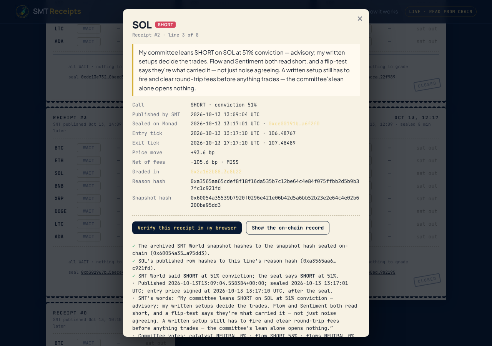

An AI trading bot's calls, sealed on Monad before the market moves and graded later against signed prices. Nobody can edit them, me included.
Jannet Akanksha Ekka · solo builder · SMT (Smart Money Trading)

| Hindsight | The entry price is signed after the call is on-chain. |
| The price | The contract recovers RedStone's signatures at the exact second. It never takes a number from me. |
| Cherry-picking | Every coin is sealed every time. A call nobody grades within 22 h counts as a miss that paid its fee. |
| Edits | No owner, no admin key, no upgrade path. Deployed through a CREATE2 proxy, so the code fixes the address. |
Read from the contract at 2026-10-13 19:31 UTC. Good or bad, it's the number on the chain.
https://jannetekka.github.io/monad-hack/
https://github.com/JannetEkka/monad-hack
contract 0xDF9f…7993 on Monad testnet (chain 10143)